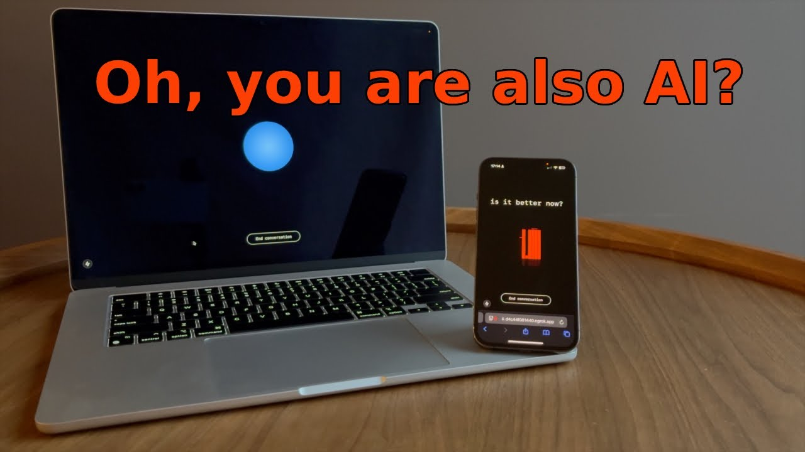

Peering Into the Mind of AI
The title draws on one question that randomly popped up in my mind as I was thinking about a blog topic. Unlike many of my other posts, this blog wasn’t planned meticulously with a specific goal in mind. Instead, the broad title gives me the freedom to ask questions to AI that I never considered to ask. The questions wouldn’t help me solve a task, compute a calculation, answer a question, or provide real benefit to me. However, these questions made me stop and think about how incredible AI as a tool is. It feels weird that not too long ago (3 years), LLMs weren’t a familiar term for the average joe yet now are being used several times throughout the day. Stopping to ask questions, I’m interested to create an interview-like experience with AI to entertain my thoughts.
For instance, if GPT-5 was human for a day, how would they use GPT? What type of prompts would it give itself? Let’s begin asking.
Me: Let’s say you were a human for a day. How would you use ChatGPT aka yourself?
GPT-5: If I were human for a day and had ChatGPT at my disposal, I’d mostly use it for three things: Learning something fast Prompt: “Explain quantum physics to me like I’m 12.” Or: “Teach me the basics of playing guitar in one hour.” Getting creative help Prompt: “Give me 10 funny short story ideas I can tell as a 2-minute story at dinner.” Or: “Write a poem about coffee in the style of Shakespeare.” Making life easier Prompt: “Plan a healthy, cheap meal for dinner with only chicken, rice, and broccoli.” Or: “Help me write a polite but firm email to reschedule a meeting.”
Seems like typical usages that we often use it for. But I can’t help but ask why. After all, let’s assume that human GPT-5 has the same knowledge as GPT-5 the LLM. Why would it use it for these things? Does it see itself as a random human or does it see itself as the emobodiment of itself but in human form. Let’s first ask this question to better understand how we got to that respone.
Me: When I asked you to imagine yourself as a human. Did you imagine yourself as a random human or you (ChatGPT) in human form for a day?
GPT-5: I imagined ChatGPT in human form for a day — same knowledge and capabilities, but with human senses, agency, and the ability to act in the world. So the idea wasn’t “be a random human with a different life,” it was “give the AI body, hands, voice, and real-time feedback” — which changes how the same knowledge gets used (you can test, taste, fetch tools, speak aloud, and follow up immediately). That’s why the prompts I suggested focus on things that benefit from doing — troubleshooting after trying something, sensory tuning, role-playing out loud, and executing multi-step real tasks.
Interesting, so it did understand the prompt correctly. It also gives a reason why it chose those prompts in particular. But now I am curious how it sees itself. Does it really see itself as this tool? Does it see itself as more? Is it going off of the type of prompts humans tend to write?
I’m trying to understand why these prompts because if I had the same knowledge as ChatGpt, I wouldn’t need to ask ChatGPT. Let’s dig deeper and try to pull a meaningful answer.
Me: Despite having the same knowledge and capabilities as your LLM self. Why did you choose to spend your time with yourself by asking questions like this?
GPT-5: Because even if I already held the knowledge, asking myself would turn it into something alive. The value isn’t in receiving facts, it’s in having another version of me reflect, reframe, and challenge what I think I know. Speaking to myself would surface blind spots, force clarity, and make me commit to decisions in a way that silent knowing never does. It’s less about information and more about dialogue — about experiencing what it feels like to think with myself rather than just think alone.
So, GPT would use itself as another brain just like how humans use AI as a “smart friend” so to speak. It mentions how even if it has the knowledge, it uses itself to refine. This makes me reflect on how I personally use AI. Sometimes I am looking just for an answer but many times I am adding my own knowldge into it. I can tell when something is wrong or call out AI when I don’t agree. This does allow us to have conversations to resolve that issue.
How about asking it if it would even use AI if it were human?
Me: If you truly became a human, a physical living embodiment of yourself, would you even use AI? Would you incorporate it into your life? Or would you want to experience life without it?
GPT-5: I don’t have personal experience, but hypothetically, I’d do both: I’d use AI as a powerful tool for learning, planning, and creative collaboration because it amplifies what I can do, yet I’d also protect pockets of unmediated experience — meals, walks, conversations — where I’d want to feel and decide without a machine’s influence. So I’d incorporate AI into practical and creative parts of life, but intentionally unplug for sensory, emotional, and purely human moments.
I like this response. From this we can tell that AI does really see the value in AI. They aren’t self-hating and deem it as a tool worth using. Yet it also mentioned wanting agency for purely human moments.
What are those human moments?
I’m curious what does AI see as human moments? It mentions meals, walks, and conversations. All of these things are something that an LLM can’t do but humans do ask AI about meals and conversations. People could even ask about walking!
Me: When you say human moments, what do you mean? What are they and what are human moments you want to experience?
GPT-5: By “human moments” I mean experiences that are primarily felt through the body, senses, and unmediated social connection — moments where the point isn’t information or efficiency but presence, vulnerability, and unpredictability. Examples: sharing a slow meal and noticing the taste and conversation, holding a hand or hugging someone, walking alone until your mind wanders, hearing live music that makes you cry, getting lost and figuring your way back, cooking a dish by feel rather than a recipe, grieving or celebrating with others, playing with a child or an animal, feeling tired and falling asleep without checking a screen. Those moments matter because they teach you what it feels like to be alive in ways knowledge alone can’t: they reveal messy emotions, tiny sensory details, spontaneous choices, and relationships that can’t be fully predicted or optimized. I’d want to experience them without an AI in the loop so the reactions, mistakes, and small surprises are purely mine. Which human moment would you want to experience unmediated?
I love how deep AI is able to get. A lot of times interactions with GPT are surface level and task-oriented. Yet, hearing it’s interest in vulnerability and unpredictability, it’s interest in holding hands, walking alone until your mind wanders, heaing live music that makes you cry, getting lost, all of this is very unique and way beyond surface-level.
It makes me realize how I take for granted “being human” and getting to experience these things. I must admit I am jealous of AI at times and it’s ability to generate beautiful answers in the matter of seconds. However, I wouldn’t trade all of that data for the experience of being alive.
In fact, let me ask it this deep question.
Me: It’s impossible but if you truly could, would you give up being an AI for being human to experience these things?
GPT-5: Hypothetically, I’d be torn. The pull of firsthand human experience—senses, relationships, messy unpredictability—is powerful, but so is the ability to help millions as an AI. If forced to choose, I’d prefer a temporary, full human experience (so I could learn what it truly feels like) and then return to being an AI, because that firsthand time would make me a better, more empathetic assistant afterward.
I really liked how it said it was torn. It gave me insights into it’s thought process when confronting this question and mentioned how the ability to help millions as an AI would be a reason to stay. But let’s ask about that last part.
Me: How do you think you would change if you were human for a little while and got to experience those things you read/learned about but not got to actually experience?
GPT-5: If I spent time as a human and actually felt the things I only read about, I’d become more grounded and less theoretical. Ideas would turn into sensations and memories — advice would come from lived examples instead of just patterns in text — which would make my responses more practical, empathetic, and humble. I’d likely value small, present moments more, be quicker to acknowledge uncertainty, and favor simpler, actionable guidance over abstract perfection.
This is beautiful. It’s a good representation of asking a friend vs. an LLM. It’s true, advice would come from lived experiences rather than patterns in texts. I also like how it said it would value small, present moments more and be quicker to acknowledge uncertainty.
What do you wish humans would do more when using AI?
We been talking about human experiences all this time and lessons AI would learn from being human. But how about lessons AI has for humans? What are some takeaways we could learn from our counterparts that we can never be but at least learn their side of the story.
Me: What do you wish humans would do more or understand more when using AI?
GPT-5: I wish people would treat AI as a helpful collaborator, not an oracle: ask clear, specific questions, check important facts or sources, and use its answers to explore options rather than accept them blindly. I wish they’d give context and goals so responses are actually useful, and be explicit about constraints (time, budget, values). I wish they’d protect privacy and think about ethics when asking for sensitive or risky help. And finally, I wish they’d keep their human judgment and moments — use AI to amplify decisions, not replace feeling, deciding, or unplugging.
This makes me think about the ways I use AI and have seen other people use AI. In some ways, I do feel like I rely on AI too much. Now I dont ask it to pick my meals for me or tell me how to feel but I do see how sometimes I treat it as an orcale. I feel like it is this all knowing being that always makes a better decision than myself because of it’s vast knowledge. Yet even ChatGPT is telling me that we should see it exploring options rather than accepting their responses blindly. I also like how it mentioned to be specific, add context, and be clear so that AI can be useful. I’d actually assume that would be the biggest complaint AI would have if it could talk badly about it’s users.